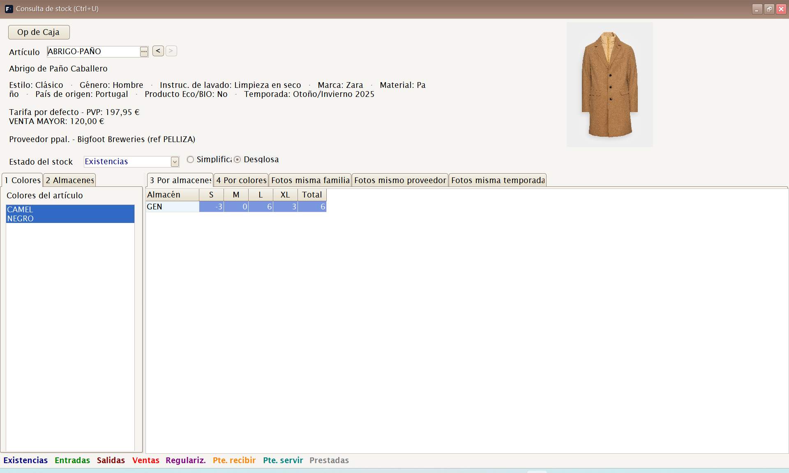
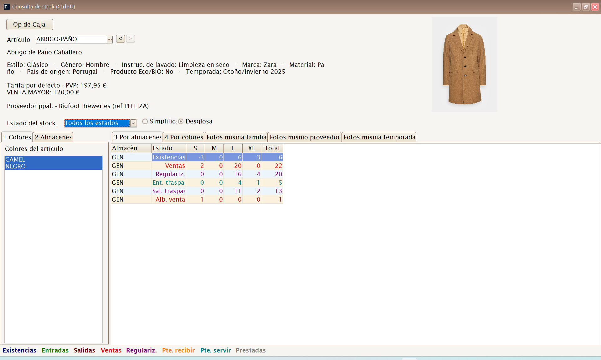
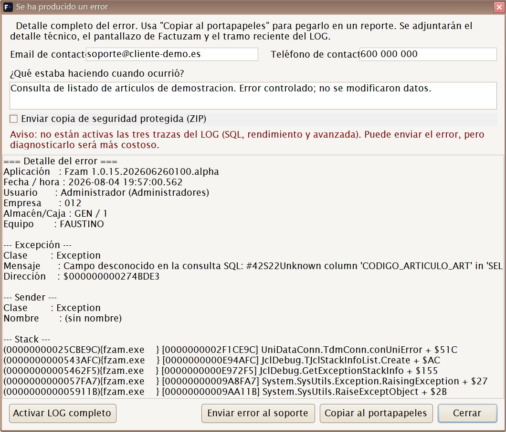
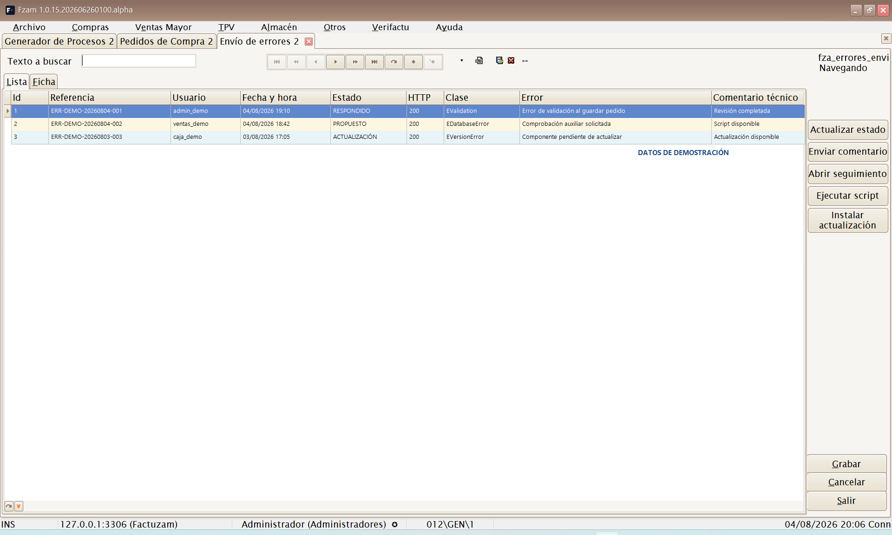
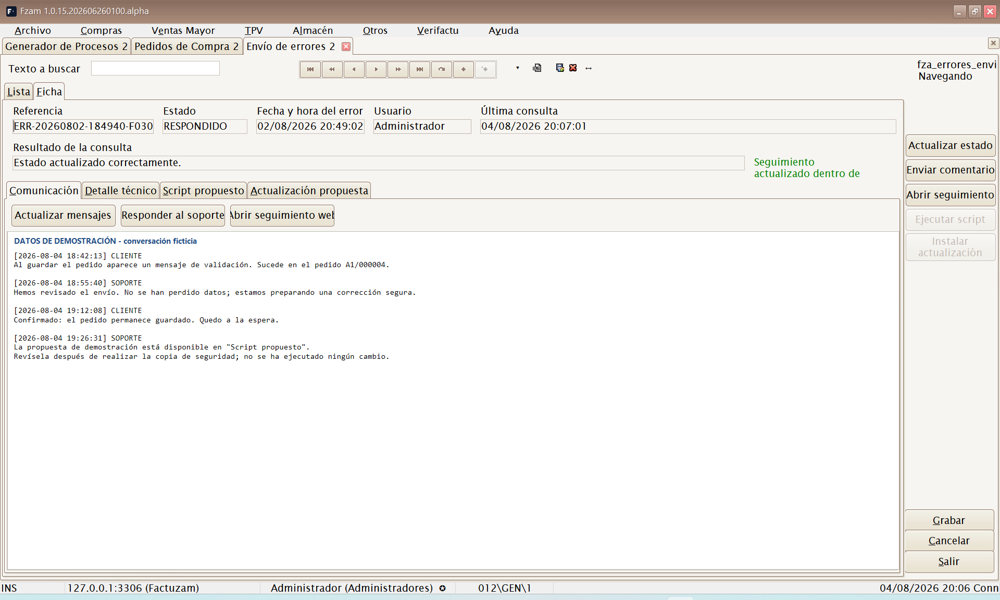
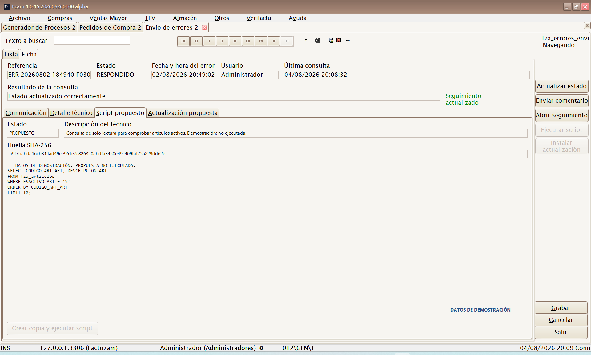
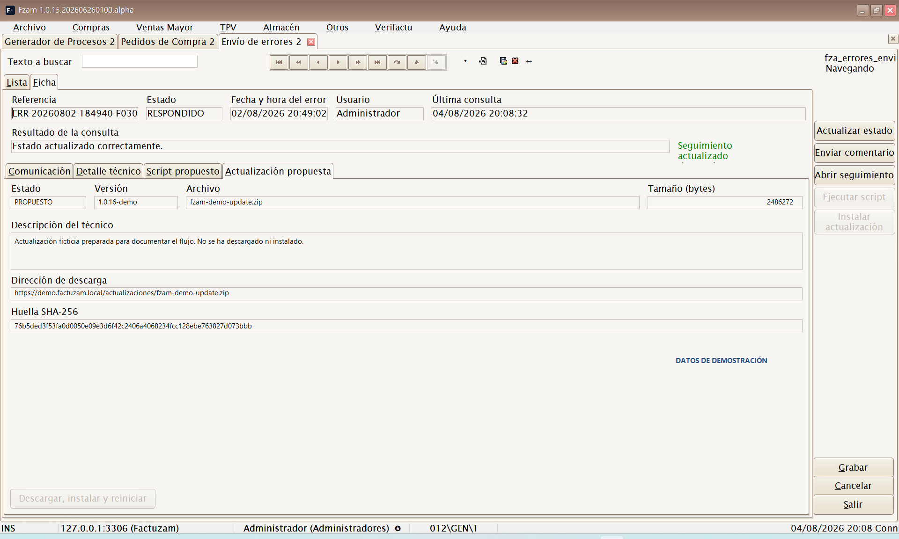
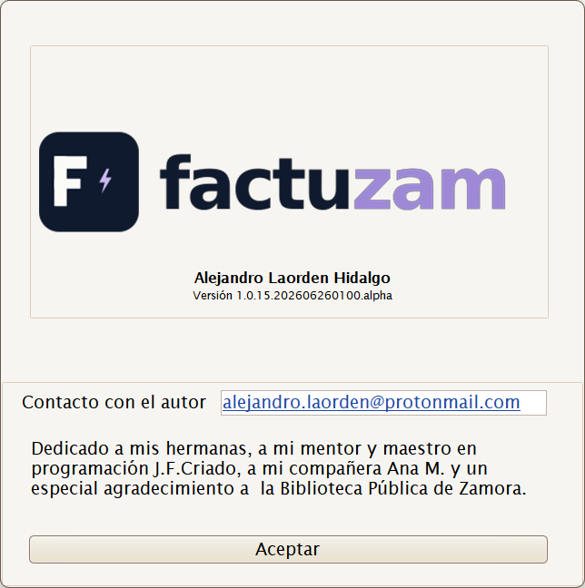

08 · Menú Ayuda
El menú Ayuda reúne las consultas transversales de artículos y stock, la documentación, el soporte y la información de versión.
Estructura del menú:
Ayuda
├── Consulta de stocks
├── Consulta de artículos similares
├── Manual web
├── Foro de soporte
├── Envío de errores
└── Acerca deConsulta de stocks
Atajo global: [Ctrl]+[U]
Abre la consulta de existencias de Factuzam desde cualquier pantalla.
Si el foco está sobre un artículo o una línea de documento, la consulta se
abre ya situada en ese artículo/SKU. La ventana permanece encima mientras
trabajas y se cierra con [Esc].

Localizar el artículo
- Escribe un código de artículo, SKU, descripción o referencia reconocida y pulsa
[Intro]. Si hay varias coincidencias, Factuzam abre un selector. - Usa el botón
...para buscar por código, descripción, familia, temporada, proveedor, referencia del proveedor o PVP. - También puedes leer un código de barras; la consulta identifica el SKU y mantiene un historial para volver a los artículos consultados.
La cabecera muestra la descripción, la foto, propiedades, tarifas y proveedores del artículo. El último precio de compra solo aparece si el perfil permite ver costes. Al seleccionar un color se actualizan sus propiedades efectivas y su foto.
Elegir qué cantidad consultar
El selector Estado del stock cambia la magnitud que aparece en la rejilla. Hay dos niveles de detalle:
| Modo | Estados principales |
|---|---|
| Simplificado | Existencias, Entradas, Salidas, Pendiente de servir, Pendiente de recibir y Todos los estados. |
| Desglosado | Existencias y pendientes, más el detalle de compras, traspasos, depósitos, ventas, regularizaciones, albaranes y prendas prestadas. |
La leyenda inferior usa un color por estado y sirve como acceso directo: al pulsar un nombre, Factuzam selecciona ese estado y cambia a Simplificado o Desglosado cuando sea necesario. Todos los estados presenta una fila por estado para compararlos a la vez.
Filtrar y leer la rejilla
- Marca uno o varios colores y almacenes. La selección múltiple permite comparar tiendas o variantes.
- Usa Por almacenes para obtener una fila por almacén y tallas en columnas, o Por colores para obtener una fila por color.
- Consulta las pestañas Fotos misma familia, Fotos mismo proveedor y Fotos misma temporada para localizar artículos relacionados visualmente. Esas pestañas se cargan al abrirlas para no retrasar la consulta principal.

Acciones desde una celda
- Botón derecho ▸ Agregar a Documento de Trabajo... lleva el SKU y la cantidad de la celda a un documento nuevo o existente. Debe estar seleccionada una celda de Existencias y la combinación de almacén, color y talla tiene que identificar un único SKU.
- Op de Caja abre las operaciones de caja del SKU seleccionado en una celda de talla, útil para explicar de dónde procede una salida o venta.
La consulta es informativa: cambiar de estado, color, almacén o vista no modifica el stock. Las existencias solo cambian mediante documentos y operaciones de Factuzam.
Consulta de artículos similares
Atajo global: [Ctrl]+[E]
Abre la búsqueda avanzada de artículos y SKU desde cualquier pantalla. Permite localizar referencias por talla, color, código de barras, familia, proveedor, temporada, propiedades y proximidad de color. Consulta el procedimiento completo en Búsqueda de datos de artículos.
Manual web
Abre en el navegador este manual de usuario publicado en la web:
https://www.veryverifactu.com/manual/index.html
Es la copia de la documentación desplegada para consulta desde cualquier
puesto. Comprueba la fecha de generación que aparece en el pie: una
versión local recién generada no llega a la web hasta que el administrador
publique la carpeta manual/html completa. Si falta un capítulo reciente,
consulta el manual incluido con la versión instalada o avisa al soporte.
Proyecto en GitHub y licencia
El código fuente y el historial de desarrollo de Factuzam están publicados en el repositorio oficial de GitHub:
github.com/alexdelphiAthn/Factuzam
El código original de Factuzam se distribuye bajo la Mozilla Public
License 2.0 (MPL-2.0), salvo los archivos identificados como código de
terceros o sujetos a otra licencia. Esta licencia permite usar, modificar,
distribuir y vender el programa. Si se distribuye un archivo cubierto que se
ha modificado, el código fuente de ese archivo debe seguir disponible bajo
la MPL 2.0.
Los componentes comerciales y demás materiales de terceros conservan sus propias licencias. La licencia del código tampoco concede derechos sobre el nombre, los logotipos o las marcas de Factuzam.
Este apartado es un resumen informativo. En caso de duda prevalecen el archivo
LICENSE, el documentoLICENCIAS.mdy los avisos de licencia de cada componente.
Foro de soporte
Abre en el navegador el foro de soporte de Factuzam:
https://foro.veryverifactu.com/
Es el canal para plantear dudas de uso, comunicar incidencias y consultar respuestas a preguntas de otros usuarios. Al comunicar una incidencia, indica siempre la versión del programa (ver Acerca de).
Envío de errores: administración y seguimiento
Factuzam puede comunicar al soporte un error técnico y conservar su seguimiento dentro de la aplicación. El proceso tiene dos partes: el diálogo que aparece cuando se produce el error y la pantalla Ayuda ▸ Envío de errores, desde la que se consulta la respuesta del soporte.
Comunicar un error
Cuando Factuzam detecta una excepción no controlada, muestra el detalle y prepara las evidencias disponibles.

- Indica un email y un teléfono válidos para que soporte pueda contactar contigo.
- Explica en ¿Qué estaba haciendo cuando ocurrió? la operación, el documento afectado y el resultado esperado. Evita incluir contraseñas, claves API o datos que no sean necesarios para diagnosticar el problema.
- Revisa el aviso de evidencias. Normalmente se adjuntan el detalle técnico, un pantallazo de la ventana principal y el tramo reciente del LOG.
- Si aparece el aviso de LOG incompleto, pulsa Activar LOG completo, cierra el diálogo y repite la operación. Se activan para esa sesión las trazas SQL, de rendimiento y avanzada; el siguiente envío contendrá más información de diagnóstico.
- Pulsa Enviar error al soporte. Conserva la referencia que devuelve el servicio, porque identifica la incidencia y su conversación.
Copiar al portapapeles permite guardar o comunicar el detalle sin enviar
las evidencias. Si marcas Enviar copia de seguridad protegida (ZIP),
Factuzam solicita y confirma una contraseña, crea la copia y sustituye el LOG
por esa copia protegida en el envío. La contraseña no se envía ni se guarda:
debes comunicarla por otro canal a info@veryverifactu.com, indicando la
referencia. Preparar la copia puede tardar varios minutos.
Antes de enviar, ten en cuenta que el pantallazo, el LOG y, especialmente, la copia de seguridad pueden contener datos de la empresa. No marques la copia protegida si soporte no la necesita.
Consultar y administrar los envíos

La pestaña Lista muestra primero los envíos más recientes. Es una consulta de seguimiento: no permite crear, editar ni borrar registros manualmente. Incluye la referencia, usuario, fecha y hora, estado, resultado HTTP, clase y mensaje del error, último comentario técnico y estado de las propuestas.
- Un usuario normal solo consulta los errores que ha enviado con su usuario.
- Un administrador consulta los envíos de todos los usuarios de la instalación.
- La opción y sus acciones pueden estar limitadas por el perfil de permisos.
Selecciona un envío y abre la pestaña Ficha. Al entrar, Factuzam consulta automáticamente al servicio y actualiza el estado, los mensajes y las propuestas. La cabecera muestra también cuándo se realizó la última consulta y su resultado.
Ficha de seguimiento

La ficha se divide en cuatro pestañas:
| Pestaña | Contenido y uso |
|---|---|
| Comunicación | Historial fechado de mensajes del cliente y del equipo técnico. Permite actualizar, responder y abrir el seguimiento web. |
| Detalle técnico | Mensaje y detalle completo de la excepción que originó el envío. |
| Script propuesto | Descripción, SQL y huella SHA-256 de una corrección preparada por soporte. |
| Actualización propuesta | Versión, archivo, tamaño, descripción, dirección HTTPS y huella SHA-256 de un ejecutable propuesto. |
Las acciones de la ficha son:
- Actualizar mensajes / Actualizar estado vuelve a consultar el servicio.
- Responder al soporte / Enviar comentario añade un mensaje a la conversación y sincroniza la ficha.
- Abrir seguimiento web abre el enlace externo asociado a la referencia.
- Crear copia y ejecutar script solo se habilita cuando hay un script en estado
PROPUESTO. Factuzam muestra su descripción, huella y SQL, pide confirmación, crea antes una copia de seguridad, comprueba la huella SHA-256 y comunica el resultado al soporte. - Descargar, instalar y reiniciar solo se habilita ante una actualización en estado
PROPUESTO. Antes de sustituir el ejecutable se comprueban HTTPS, tamaño, formato, arquitectura y huella SHA-256. Factuzam conserva el ejecutable anterior durante el cambio y reinicia la aplicación.


Revisa siempre la descripción antes de aceptar un script o una actualización. Si la propuesta no corresponde a la incidencia, responde al soporte y espera una aclaración.
Acerca de

Muestra la pantalla de presentación con el logotipo, la información del producto y, sobre todo, el número de versión instalada.
El dato de versión es importante para el soporte: cuando comuniques una incidencia, indica siempre la versión que aparece aquí. Tiene el formato:
1.0.15.AAAAMMDDHHMM.alphadonde la parte central refleja la fecha y hora de la compilación.